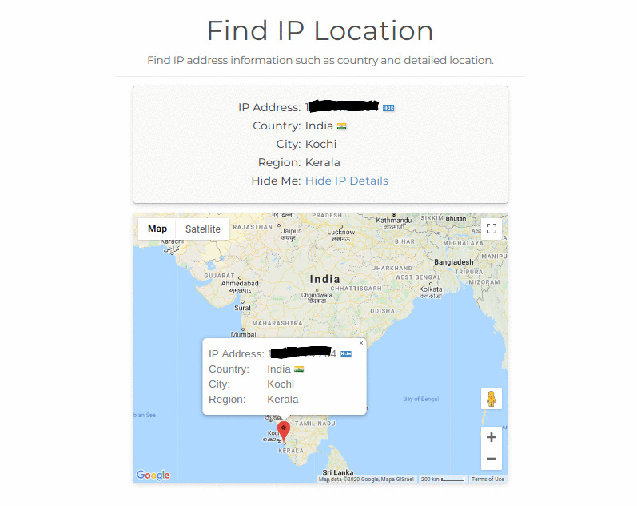

A brief about IP address

It is important to understand what an IP address is. IP stands for Internet Protocol and is an address that is assigned to each domain on the web (for example: 216.58.217.206). The "address" part refers to a unique number that gets linked to all online activity you do...somewhat like a return address on a letter you'd send out and all this happens in milliseconds. we're always connected through our personal computers, laptops or mobile devices. And every time you go on the Internet, an IP address is right there, working for you. This number is used to help devices talk to each other and exchange data. Your network router has its own IP address, of course, as does every device on your network. They are mapped to domain names using what’s called the DNS. You can think of the DNS as a phone book for the world wide web. When you type Google.com into your address bar, a DNS query is performed by your ISP to request the nameservers associated with that domain. The mapping to the IP address is then done behind the scenes by the server, which allows you to use the domain name to access it. Without DNS, you would have to type in something like “216.58.217.206” to get to Google.

Currently, there are two types of IP addresses being used on the web, and even locally by
ISPs and devices such as your home router. They are IPv4 and IPv6
Example of IPv4 address: 216.58.217.206
Example of IPv6 address: 0:0:0:0:0:ffff:d83a:d9ce
A dedicated IP address is just what it sounds like: it means your domain is assigned an IP
address that isn’t shared or used by any other domains. It’s your domain’s home on the
web.
A shared IP address, unlike a dedicated one, means your domain is mapped to an address that
is shared between multiple domains. A shared IP is quite common nowadays with most WordPress
hosting providers.
That’s because, for many configurations, there is no need for a dedicated IP address.
your general geographic location
Your IP address can reveal your geographic location. In most cases, this won't be any more specific than your city and state. In rare cases, it could be as specific as your neighborhood. Your IP address also carries the name of your Internet Service Provider (the company that gives you internet access). While there's not a lot someone can do with this information, it can be combined with details from other sources to piece together data about your identity.
Can anyone find me with my ip?
When you connect to the internet through your Internet Service Provider(ISP) you are assigned an IP address. Your IP address is similar to your mailing address, but for your computer, on the internet. The IP address routes internet traffic to your computer. To clarify, it does not reveal your location. If someone was able to get your IP address they could learn a bit about your internet service, such as which provider you use to connect to the internet, but they really can't locate you, your home, or your office
In some circumstances they may locate the city you are in, or perhaps a nearby city, but they will not have your physical address. Once they trace you back to your ISP they will lose your trail. While strangers may not be able to find you, your ISP knows where you are. ISPs will generally go to great lengths to protect you and your privacy but they do keep logs of your connections.
To clarify, with one big exception found. If you were to participate in illegal activities then a law enforcement agency can get a court order and submit it to your ISP to request your information. One way you can be found is with the involvement of law enforcement.
In the end, the simple answer is no. If someone was to get your IP address they can not find you. There are other ways you can be located but this isn't one of them. Posting your name and town online to social media would more likely tracked than by your IP address.
What can do with an ip address
-
Block you from accessing websites
It's possible to use your IP address to prevent you from performing certain online activities. The most common example of this is blocking your ability to reach a certain site, or to post messages in forums or the comment section of web sites.
Your IP address can also be used to block or ban you from playing online games on some gaming services.
-
Perform a Denial of Service Attack
Knowing your IP address, a malicious user may be able to perform a Denial of Service (DoS) attack, in which your network is flooded with data. It prevents normal traffic from getting through and overloads the network's ability to function.However, these attacks are usually directed at large companies or websites... it's rare that anyone would set up a DoS attack on a regular user.
How to protect your IP address
-
Use a Virtual Private Network (VPN):
This protects your data online by the use of encryption and proxy tunneling. It hides your IP address and redirects your traffic through a separate server, making it much safer for you online. VPN services are best practice for hiding your IP address. There are free VPN services out there, but don’t expect them to be fast enough for any streaming or gaming.
-
Update your router and firewall rules
Your router forwards data between networks, and your firewall prevents unauthorized access. Make sure you change the administrative password on your router, since default passwords are frequently used by attackers to break into your network. Each default password provided by your ISP is the same and can be easily searched online. Also, set your firewall rules to not allow any ping requests from the Internet. This makes sure unauthorized visitors won’t get through.
-
Change privacy settings on instant messaging applications
Only allow direct connections from contacts and don’t accept calls or messages from people you don’t know. Changing your settings to private makes it harder to find your IP address because people who don’t know you cannot connect with you.
-
Update your antivirus solution and add security layers
Making sure you are caught up on all of your security software’s updates ensures you’re protected from threats. Adding additional security on top of your antivirus further protects you. For instance, Malwarebytes Anti-Malware blocks malicious URLs originating from phishing emails in addition to blocking bad sites you might encounter.